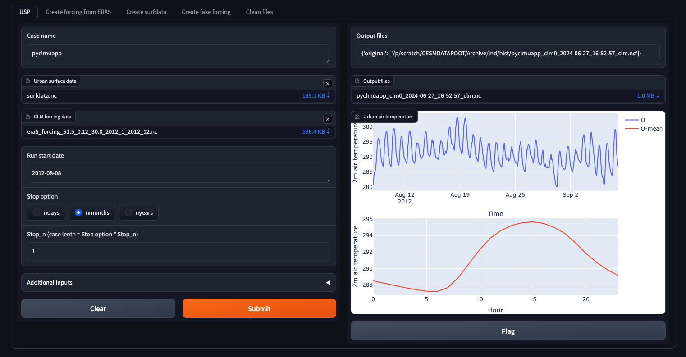
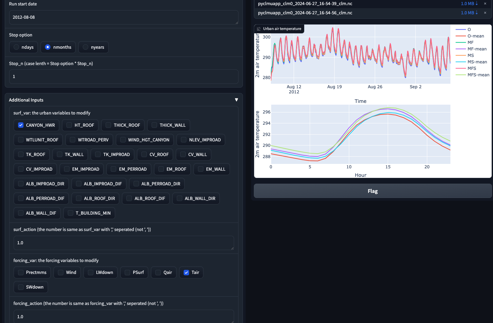
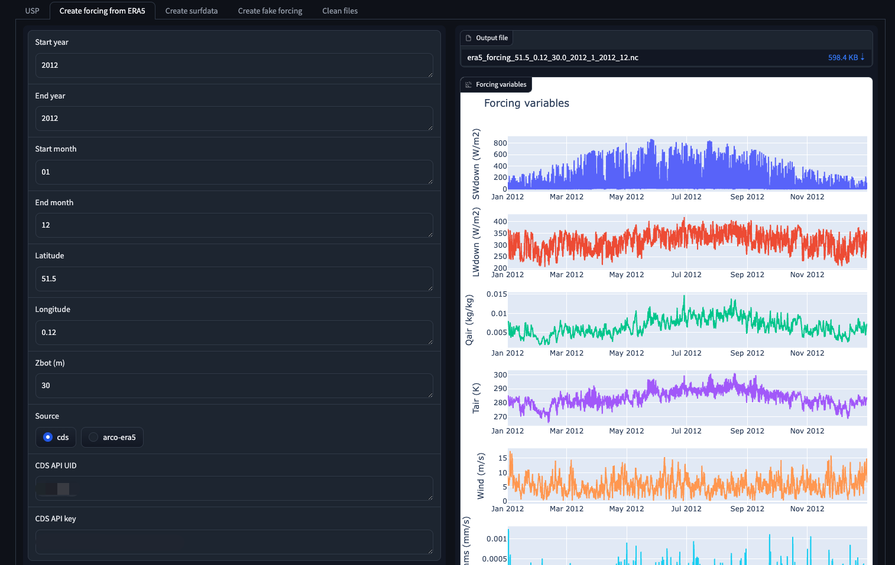
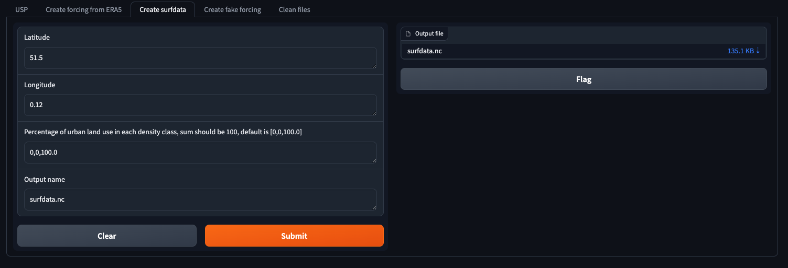
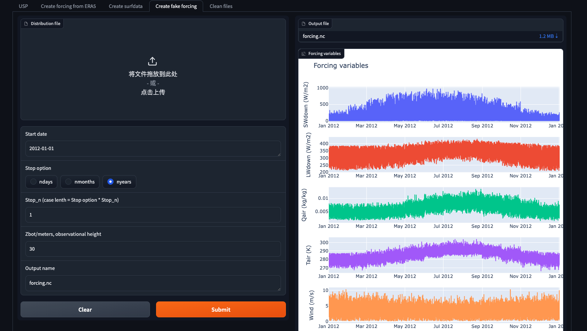

Basic usage: Web interface
Step 1: Run pyclmuapp container
Open the terminal and input follow
docker pull envdes/pyclmuapp:1.0
docker run --hostname clmu-app -p 8080:7860 envdes/pyclmuapp:1.0
then copy http://localhost:8080 to your browser.
1 USP
Step 2: Run simulation by providing surface data and forcing data.
Click Submit button, and then get the result from the left. The Output files are the simulation output files location. The outputs are Netcdf file, which can be read using lots tools, including Xarray and Netcdf4 Python package, Matlab, NCAR Command Language, HDFView, Panoply etc. The figures on the left were generated by Python.

Optional: Modify the urban surface or/and forcing and run simulations.

2 Create forcing from ERA5
Optional: Create forcing from ERA5 single level data.

3 Create surfdata
Optional: Create surface data.

4 Create fake forcing
Optional: Create fake forcing.

Input Parameters
1 USP
Case name: Case name, default is pyclmuapp
CLM surface data: User surface data file, default is None If have the domain file, input the file path.
Forcing file: User forcing file, default is None. If have the domain file, input the file path.
Run start date: Start date, default is
2012-08-08.Stop option: Stop option, default is
ndays, can be nyears, nmonths, ndays.Stop_n: Stop number, default is
1. Case length is STOP_OPTION * STOP_N
Additional Inputs
surf_var: Surface variable to modify, default is
None. Can be one/some (use ‘,’(withou space to seperate each)) of ‘CANYON_HWR’, ‘HT_ROOF’,’THICK_ROOF’,’THICK_WALL’,’ WTLUNIT_ROOF’,’WTROAD_PERV’,’WIND_HGT_CANYON’,’NLEV_IM PROAD’,’TK_ROOF’,’TK_WALL’,’TK_IMPROAD’,’CV_ROOF’,’CV_ WALL’,’CV_IMPROAD’,’EM_IMPROAD’,’EM_PERROAD’,’EM_ROOF’ ,’EM_WALL’,’ALB_IMPROAD_DIR’,’ALB_IMPROAD_DIF’,’ALB_PERROAD_DIR’,’ALB_PERROAD_DIF’,’ALB_ROOF_DIR’,’ALB_ROOF_DIF’,’ALB_WALL_DIR’,’ALB_WALL_DIF’,’T_BUILDING_MIN’.surf_action: Surface action to add, default is
0. The number is same as surf_var with “,” seperated (not “, “).forcing_var: Forcing variable to modify, default is
None. Can be one/some (use ‘,’(withou space to seperate each)) of ‘Prectmms’,’Wind’,’LWdown’,’PSurf’,’Qair’,’Tair’,’S Wdown’.forcing_action: Forcing action to add, default is 0. The number is same as forcing_var with “,” seperated (not “, “).
run_type: Run type, default is
coldstart, can be branch.run_refcase: Reference case, default is
None.run_refdate: Reference date, default is
None.hist_type: Param for usp. ouput type. Can be GRID, LAND, COLS, default is GRID
hist_nhtfrq: Param for usp. History file frequency, default is 1 (ouput each time step)
hist_mfilt: Param for usp. each history file will include mfilt time steps, default is 1000000000
logfile: Log file, default is
pyclmuapp.log.case clean: Clean, default is
False. True, will clean the case files.
2 Create forcing from ERA5
Start year: Param for get_forcing. Start year, default is 2012.
End year: Param for get_forcing. End year, default is 2012.
Start month: Param for get_forcing. Start month, default is 1.
End month: Param for get_forcing. End month, default is 12.
Latitude: Latitude of interesting point.
Longitude: Longitude of interesting point.
Zbot: Forcing height.
CDS API UID: CDS API UID
CDS API key: API Keys.
3 Create surfdata
Latitude: Latitude of interesting point.
Longitude: Longitude of interesting point.
Percentage of urban land use in each density class, sum should be 100, default is [0,0,100.0]
Output name: the output surfdata name.
4 Create fake forcing
Distribution file: Like the file of
distribution.csv. Not required. Default file is generated fromgenerate_fake.ipynb.Run date: Start date, default is
2012-08-08.Stop option: Stop option, default is
ndays, can be nyears, nmonths, ndays.Stop_n: Stop number, default is
1. Case length is STOP_OPTION * STOP_NZbot: Forcing height.
5 Clean files
Clean USP files: delete the USP folder.
Case name: delete the case cache files.
Clean era5 files: delete the eraß5 cache files.
Clean cache files: delete the cache files of CLM.